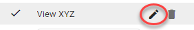

First, click Edit View.

Next, select the 'Shared With' tab and find a user/group to share the new view with.
|
|
Note: You can only share with users/groups that have been assigned with a role created for this specific matter, which includes the Access Matter permission. |